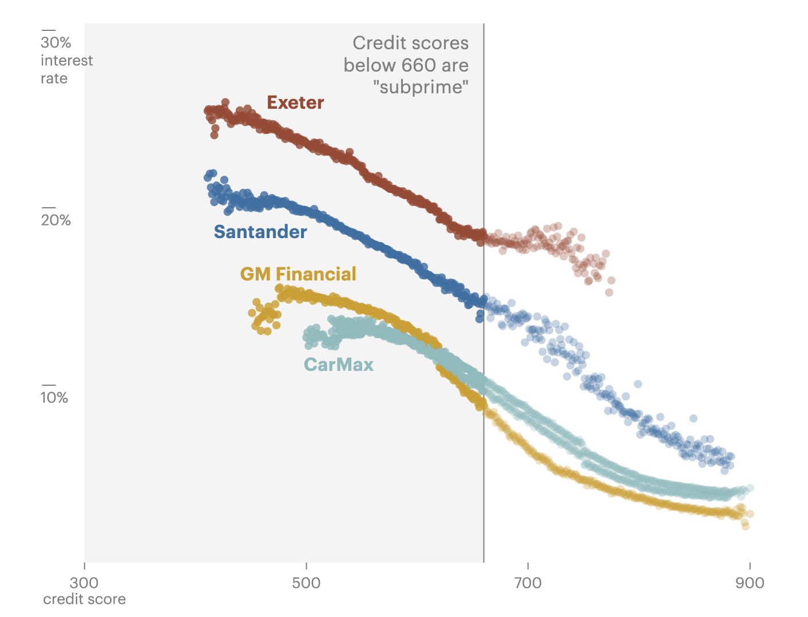

Lucas Waldron
Graphics editor and journalist
about
graphics
video
Graphics and animation for
The Delusion of “Advanced” Plastic Recycling.
Maps for
Elon Musk’s Boring Company Is Tunneling Beneath Las Vegas With Little Oversight.
.
Design and development for
The Neverending Case: How 10 Years of Delays Have Prevented a “Horrendous” Sexual Assault Allegation From Going to Trial.
.
Data analysis, scrolly map and graphics for
In a State With School Vouchers for All, Low-Income Families Aren’t Choosing to Use Them.

Graphic for
One of the Nation’s Largest Auto Lenders Told Customers, “We’re Here to Help.” Then It Took Their Money and Their Cars.
Design and development for
Documents Show Internal Clash Before U.S. Officials Pushed to Weaken Toddler Formula Rules.